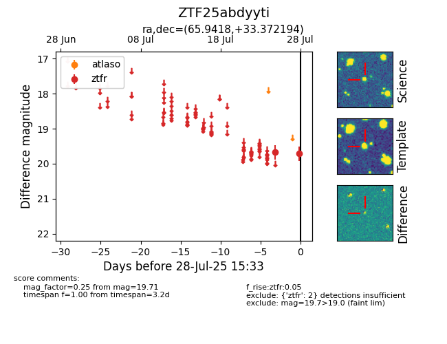

Target ZTF25abdyyti at 2025-08-06 17:27, see:
FINK: fink-portal.org/ZTF25abdyyti
Lasair: lasair-ztf.lsst.ac.uk/objects/ZTF25abdyyti
ALeRCE: alerce.online/object/ZTF25abdyyti
alt names
ZTF25abdyyti (ztf,fink)
coordinates:
equatorial (ra, dec) = (65.9418,+33.37219)
galactic (l, b) = (165.8402,-11.28070)
photometry
last ztfr=19.71
2 ztfr detections
